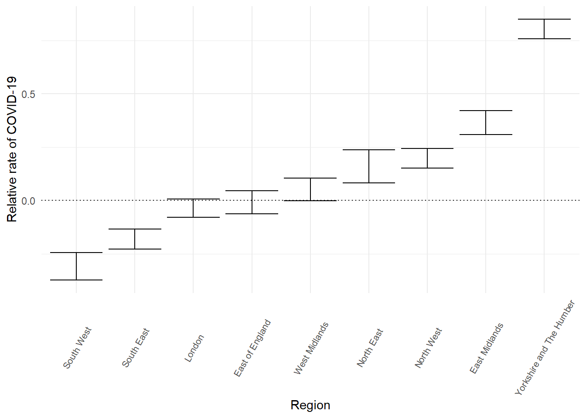
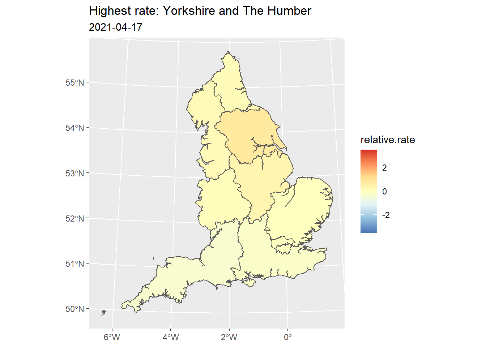

if(!"tidyverse" %in% installed.packages()[,1]) install.packages("tidyverse")
if(!"lme4" %in% installed.packages()[,1]) install.packages("lme4")
if(!"ggplot2" %in% installed.packages()[,1]) install.packages("ggplot2")
if(!"proxy" %in% installed.packages()[,1]) install.packages("proxy")
if(!"sf" %in% installed.packages()[,1]) install.packages("sf")
require(tidyverse)
require(lme4)
require(ggplot2)
require(sf)
Geographies of COVID-19
An introduction to quantitative geography
Professor Richard Harris, (updated: Jun 06 2022)
Introduction
Welcome to the School of Geographical Sciences, University of Bristol. The School has a long and distinguished history of teaching quantitative methods, spatial modelling and geographic data science to all of our students. Historically, some of our pioneering staff in this field have included:
Peter Haggett, one of the most influential geographers of his generation;

Ron Johnston, one of the most prolific authors ever in human geography;

Les Hepple, an exceptional scholar, polymath and dedicated teacher; and
Kelvyn Jones, a leading pioneer of quantitative methods in human geography.
We continue this tradition into the present-day through our Quantitative Spatial Science Research Group, which (no longer all male and all white!) leads the teaching of quantitative methods to students in all years of our undergraduate (and Masters) programmes. These include BSc Geography, BSc Geography with Quantitative Research Methods and our new MSc in Geographic Data Science and Spatial Analytics.
Why We Teach Computing and Data-handling Skills
Programming languages such as R and Python provide an integrated environment that can be used to input, analyse and communicate the results of data-based geographic research, bringing together data manipulation, statistical analysis and visual methods such as charts and maps. This webpage was written in R Studio, allowing me to bring together into one document the computer code, the results of running that code and other text such as what you are reading. More standard ‘off-the-shelf’ software such as Excel do not allow this. Presently, we teach R to all our students. We do this to support their training in research methods – the sorts of skills that all geographers need and are expected to have – and also to enhance their employability because data science skills are well regarded by employers.
Today’s Exercise
All you need to do for today’s session is follow along with the instructor, copying and pasting code from this document into the R Console as they do. Please do not rush ahead as this is more likely to generate errors that you will then need to go back and correct. Just take it one step at a time, in company with the instructor. The purpose of the session is not to teach you coding so there is no need to worry about what the code fully means. It is simply to give you a flavour of the sort of skills we teach our students.
If you wish, you could run this practical again from a personal computer when you get home. If you do, take a note of the web adress, which is https://profrichharris.github.io/openday and be aware that you will first need to install R and then RStudio Desktop on the computer for the following code to work. These software are free and operate on Windows, Mac OS and Linux.
To Begin
When the instructor invites you to do so, please open RStudio on your computer.
Step 1: Install/load any required libraries
The great advantage of software such as R is that it has available a large number of additional libraries that extend its functionality – for mapping, for example. The ones we need today are listed below. The code chunk, below, checks to see if these libraries have been installed already, if not then installs them, and then instructs that they are required for the current session in R.
(Code chunk 1a)
Next, we will download and load into R some data which give the reported number of positive COVID-19 cases in English neighbourhoods for the period of pandemic until free testing ended. These data are based on those from the Coranvirus Data Dashboard for England, with some minor adjustments to ensure the regional totals match those reported regionally. The English neighbourhoods are what are known as Middle Super Output Areas (MSOAs). As the data are read-in, some variables are recalculated to create percentages (e.g. the percentage of the population aged 5 to 11 years) and the number of care home beds per 1000 of the Adult population.
(Code chunk 1b)
df <- read_csv("https://www.dropbox.com/s/baqkwvsb0ah3ahh/covid_data.csv?dl=1") %>%
mutate(across(starts_with("age"), ~ 100 * . / `All Ages`)) %>%
mutate(carebeds = round(1000 * carebeds / `Adults`, 1)) %>%
mutate(`age22-34` = `age22-24` + `age25-29` + `age30-34`) %>%
pivot_longer(., cols = c(starts_with("2020-"), starts_with("2021-"), starts_with("2022-")),
names_to = "week",
values_to = "cases") %>%
filter(week > "2020-03-13")Here is the top of the data:
print(df, n = 3)# A tibble: 746,790 x 39
MSOA11CD MSOA11NM LtlaCode LtlaName regionCode regionName TCITY15CD TCITY15NM
<chr> <chr> <chr> <chr> <chr> <chr> <chr> <chr>
1 E02000002 Marks G~ E090000~ Barking~ E12000007 London J01000055 London
2 E02000002 Marks G~ E090000~ Barking~ E12000007 London J01000055 London
3 E02000002 Marks G~ E090000~ Barking~ E12000007 London J01000055 London
# ... with 746,787 more rows, and 31 more variables: PLACE <chr>, IMD <dbl>,
# IMD.mx <dbl>, `All Ages` <dbl>, `age0-4` <dbl>, `age5-11` <dbl>,
# `age12-17` <dbl>, `age18-21` <dbl>, `age22-24` <dbl>, `age25-29` <dbl>,
# `age30-34` <dbl>, `age35-39` <dbl>, `age40-44` <dbl>, `age45-49` <dbl>,
# `age50-54` <dbl>, `age55-59` <dbl>, `age60-64` <dbl>, `age65-69` <dbl>,
# `age70-74` <dbl>, `age75-79` <dbl>, `age80-84` <dbl>, `age85-89` <dbl>,
# `age90+` <dbl>, Adults <dbl>, carebeds <dbl>, AandE <dbl>, ...Step 2: Fit a model
Now that we have the data we will each fit a statistical model to a randomly sampled week of the pandemic. Please note that unless your randomly selected week happens to be the same as mine, here, then from now on our results and what appears on screen will differ. The code remains the same, however.
The model is not really very different to fitting a line of best fit to a scatter plot of data. The model basically says that the number of cases of COVID-19 in a neighbourhood is a function of the number of people who live there, their age profile and whether there is a carehome/A&E facility there (remember that early in the pandemic those living in carehomes were particularly at risk). The model allows that in some places the number of COVID-19 cases is higher than expected, which, from a geographical point of view raises the question, where?
It may take a minute or two to fit the model so please be patient.
(Code chunk 2)
sample.week <- sample(df$week, 1)
mlm <- df %>%
filter(week == sample.week) %>%
mutate(across(starts_with("age") | matches("carebeds") | matches("AandE"),
~ as.numeric(scale(.)))) %>%
glmer(cases ~ `age5-11` + `age12-17` + `age18-21` + `age22-34` +
carebeds + AandE +
(1|MSOA11CD) + (1|regionName) + offset(log(`All Ages`)),
family=poisson(), data = .,
control = glmerControl(calc.derivs = FALSE))When the model has been fitted, take a note of the week it has been fitted for.
print(sample.week)[1] "2021-04-17"Step 3: Identify which region had the highest COVID rate that week?
If we ‘dig’ into the results of the model a little we find what are, in effect, the regional rates of COVID-19, allowing for ages, carehomes and A&E facilities. They are reported on a standardised and also relative scale: a value greater than zero represents a region with more COVID-19 cases relative to the average that week; a value greater than zero represents a region with fewer. For the week I am looking at, which is in April 2021, Yorkshire and The Humber has most cases and the South West the least but, remember, it could be different for the week you are looking at.
(Code chunk 3)
regional.rates <- ranef(mlm, whichel = "regionName") %>%
as_tibble() %>%
select(-grpvar, -term) %>%
rename(region = grp, relative.rate = condval) %>%
arrange(desc(region))
regional.rates %>%
select(region, relative.rate) %>%
mutate(relative.rate = round(relative.rate, 3)) %>%
print(n = Inf)# A tibble: 9 x 2
region relative.rate
<fct> <dbl>
1 Yorkshire and The Humber 0.803
2 East Midlands 0.364
3 North West 0.197
4 North East 0.159
5 West Midlands 0.052
6 East of England -0.008
7 London -0.036
8 South East -0.182
9 South West -0.308Step 4: Ask how different the regions really are from one another
An important statistical idea is that differences can arise ‘by chance’ because of uncertainties in the way data are collected. Looked at another way, it would be extremely surprising if all the regions had exactly the same COVID-19 rate in the selected week. Knowing this, it is helpful to have some idea of our confidence/(un-/)certainty in the data, and if the regional rates could really overlap or are substantially different from each other. In this week, Yorkshire and The Humber does seem to be different from the rest, as the chart below shows, but there is little difference between, say, London, the East of England and the West Midlands. Yes, the West Midlands has a higher modelled rate than both the East of England and London but if we allow that the rates could each be a little higher or a little lower then their overlaps suggests they might not be that different afterall.
(Code chunk 4)
regional.rates %>%
mutate(ymin = relative.rate - 1.39 * condsd, ymax = relative.rate + 1.39 * condsd) %>%
ggplot(., aes(x = region, y = relative.rate, ymin = ymin, ymax = ymax)) +
geom_errorbar() +
geom_hline(yintercept = 0, linetype = "dotted") +
xlab("Region") +
ylab("Relative rate of COVID-19") +
theme_minimal() +
theme(axis.text.x = element_text(angle = 60, size = 8, vjust = 0.5))
Step 5: Map the regional differences
Having calculated the regional rates we can do the digital equivalent of taking a blank map of the study region and colouring it in to produce a choropleth map of those rates.
To achieve this, first we need a boundary file, which is ‘the blank map’.
(Code chunk 5a)
if(!file.exists("england_gor_2011_gen_clipped.shp")) {
download.file("https://www.dropbox.com/s/gb5161kl17zra7v/England_gor_2011_gen_clipped.zip?dl=1",
"regions.zip", mode = "wb")
unzip("regions.zip")
}
map.outline <- read_sf("england_gor_2011_gen_clipped.shp") %>%
rename(region = name)Next, the map is joined to the regional rates and coloured. We can do this because the boundary file and the modelled rates have an attribute in common, which is the names of the regions. In my map, although there are some differences between how the regions are shaded, they are very slight. The reason for this is that the regional geography of the disease is not especially strong for the week, possibly because the important differences are to be found at a sub-regional scale, which we shall explore next.
(Code chunk 5b)
inner_join(map.outline, regional.rates, by = "region") %>%
mutate(relative.rate = ifelse(relative.rate > 3.5, 3.5, relative.rate)) %>%
mutate(relative.rate = ifelse(relative.rate < -3.5, -3.5, relative.rate)) %>%
ggplot(.) +
geom_sf(aes(fill = relative.rate)) +
scale_fill_distiller(palette = "RdYlBu", direction = -1,
limits = c(-3.5, 3.5)) +
ggtitle(paste0("Highest rate: ", regional.rates$region[1]), sample.week)
Step 6: Look at the sub-regional differences
Another important statistical principle, which also is a geographical one, is that results are scale dependent. For example, what we see in a map is dependent upon on the size (and shape and position) of the areas that we use for the map. So, too, are the results of a statistical model that uses geographical data. It could be that the regional rates are ‘averaging away’ places of low and/or high rates within them.
Let’s refit the model but at a sub-regional scale for the same week. This will take a little longer to fit because of the more detailed geography, which is a mixture of urban and local authority geographies so, again, please be patient if it takes a minute or two.
(Code chunk 6a)
mlm2 <- df %>%
filter(week == sample.week) %>%
mutate(across(starts_with("age") | matches("carebeds") | matches("AandE"),
~ as.numeric(scale(.)))) %>%
glmer(cases ~ `age5-11` + `age12-17` + `age18-21` + `age22-34` +
carebeds + AandE +
(1|MSOA11CD) + (1|PLACE) + offset(log(`All Ages`)),
family=poisson(), data = .,
control = glmerControl(calc.derivs = FALSE))The places with the highest relative rates in the week are (for me, not necessarily you):
(Code chunk 6b)
sub.regional.rates <- ranef(mlm2, whichel = "PLACE") %>%
as_tibble() %>%
select(-grpvar, -term) %>%
rename(PLACE = grp, relative.rate = condval) %>%
arrange(desc(PLACE))
sub.regional.rates %>%
mutate(relative.rate = round(relative.rate, 3)) %>%
select(PLACE, relative.rate) %>%
print(n = 10)# A tibble: 392 x 2
PLACE relative.rate
<fct> <dbl>
1 Doncaster# 1.38
2 Wakefield* 1.21
3 Barnsley# 1.14
4 Kirklees# 1.08
5 Bradford* 1.06
6 Doncaster* 1.04
7 Rotherham# 1.03
8 Leicester* 1.02
9 Huddersfield* 1.01
10 Scunthorpe* 0.984
# ... with 382 more rowsIf I now map the rates, I obtain the following map. As it turns out, the differences between the places are not especially great for this week even at a sub-regional scale.
(Code chunk 6c)
if(!file.exists("places.shp")) {
download.file("https://www.dropbox.com/s/7cd8ef8nrkbild5/places.zip?dl=1",
"places.zip", mode = "wb")
unzip("places.zip")
}
read_sf("places.shp") %>%
inner_join(., sub.regional.rates, by = "PLACE") %>%
mutate(relative.rate = ifelse(relative.rate > 3.5, 3.5, relative.rate)) %>%
mutate(relative.rate = ifelse(relative.rate < -3.5, -3.5, relative.rate)) %>%
ggplot(.) +
geom_sf(aes(fill = relative.rate), colour = "transparent") +
scale_fill_distiller(palette = "RdYlBu", direction = -1,
limits = c(-3.5, 3.5)) +
geom_sf(data = map.outline, fill = "transparent") +
ggtitle(paste0("Highest rate: ",sub.regional.rates$PLACE[1]), sample.week)In fact, for my week of the data, there are more differences between MSOAs than there are between the sub-regional places, and more differences between those places than there are between regions. I know this from fitting a final model with three geographical levels in it – the MSOAs, the sub-regional places and the regions – and looking in the results under where it says Std. Dev. The ‘Random effect’ with the highest Std.Dev. is the level which has most geographical variation. The one with the least, has least. This sort of modelling is very useful for understanding at which geographical scales particular processes (here the spread of a disease) generate geographical outcomes.
(Code chunk 6d)
mlm3 <- df %>%
filter(week == sample.week) %>%
mutate(across(starts_with("age") | matches("carebeds") | matches("AandE"),
~ as.numeric(scale(.)))) %>%
glmer(cases ~ `age5-11` + `age12-17` + `age18-21` + `age22-34` +
carebeds + AandE +
(1|MSOA11CD) + (1|PLACE) + (1|regionName) + offset(log(`All Ages`)),
family=poisson(), data = .,
control = glmerControl(calc.derivs = FALSE))
print(mlm3)Generalized linear mixed model fit by maximum likelihood (Laplace
Approximation) [glmerMod]
Family: poisson ( log )
Formula: cases ~ `age5-11` + `age12-17` + `age18-21` + `age22-34` + carebeds +
AandE + (1 | MSOA11CD) + (1 | PLACE) + (1 | regionName) +
offset(log(`All Ages`))
Data: .
AIC BIC logLik deviance df.resid
23698.24 23766.48 -11839.12 23678.24 6779
Random effects:
Groups Name Std.Dev.
MSOA11CD (Intercept) 0.5524
PLACE (Intercept) 0.3836
regionName (Intercept) 0.2854
Number of obs: 6789, groups: MSOA11CD, 6789; PLACE, 392; regionName, 9
Fixed Effects:
(Intercept) `age5-11` `age12-17` `age18-21` `age22-34` carebeds
-8.66804 0.11763 0.09205 -0.01060 0.22678 0.02682
AandE
0.00539 Step 7: Record the location (place) with the highest rate in the padlet
Go to the padlet, https://en-gb.padlet.com/profrichharris/openday, click on the red circle with a white + sign, search for the place with the highest COVID-19 rate in your map (Doncaster in mine), and enter the date of that rate in the text before hitting Publish.
Step 8: See what happens in a different week
Finally, if there is time, and if instructed, go back to Step 2 and repeat everything from that step onward
To Consider
At the end of this exercise, when everyone has finished, if you go back to the padlet, https://en-gb.padlet.com/profrichharris/openday and interact with it then you should find that:
- there is a geography to COVID-19 in England; and
- that geography changes throughout the pandemic.
Earlier we asked the where question: where is there more or less of the disease? Now we turn to the why.
- Why are the rates higher in some places than in others?
- What might that tell us about those places or the populations that live in them?
- What are the causes of the differences?
- Is it a ‘standalone’ geography or is the geography of COVID-19 related to other geographical patterns of living within England?
- Can you think of some possible explanations?
- Does the map reveal any clues?
Thank you for attending today’s session. I wish you a pleasant time in Bristol and a safe journey home.
Further Reading
Department for Levelling Up, Housing and Communities (2022). Levelling Up the United Kingdom: executive summary. Dpt. for Levelling Up, Housing and Communities, London. Retrieved June 6, 2022, from https://www.gov.uk/government/publications/levelling-up-the-united-kingdom.
Horton, R. (2020). Comment: COVID-19 is not a pandemic. The Lancet, 396 (10255), p. 874. https://doi.org/10.1016/S0140-6736(20)32000-6.
Lawence, D. (2020). An Avoidable Crisis: The disproportionate impact of COVID-19 on Black, Asian and minority ethnic communities. The Labour Party, London. Retrieved May 24, 2021, from https://www.lawrencereview.co.uk/.